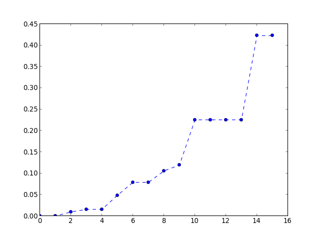
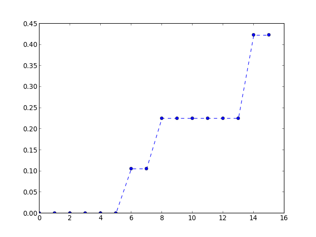
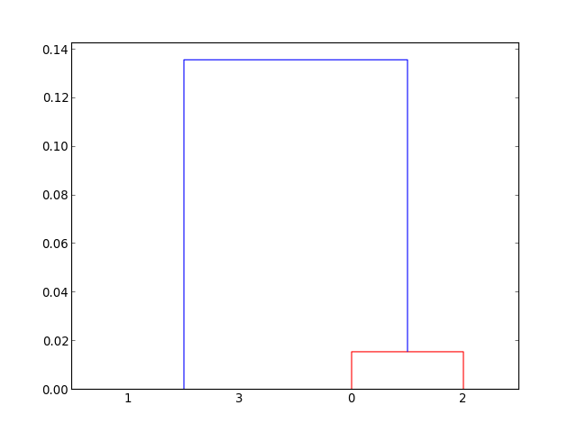
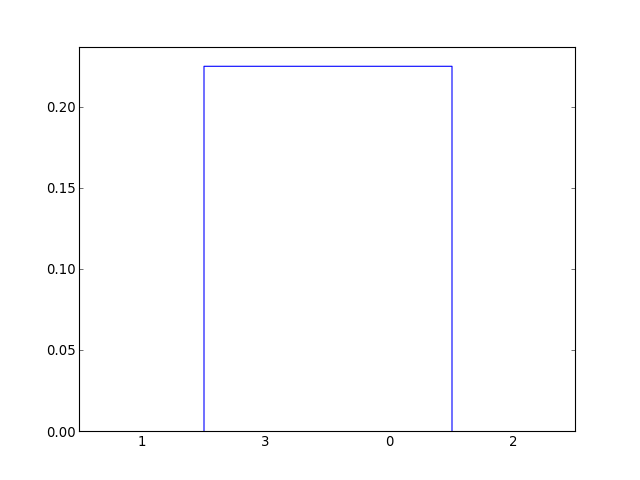
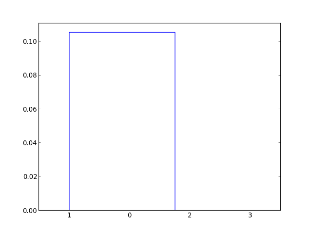
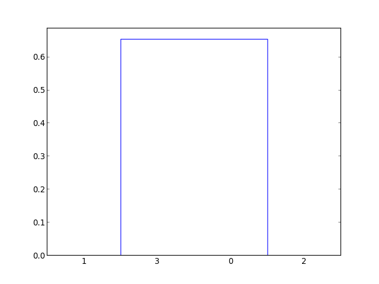
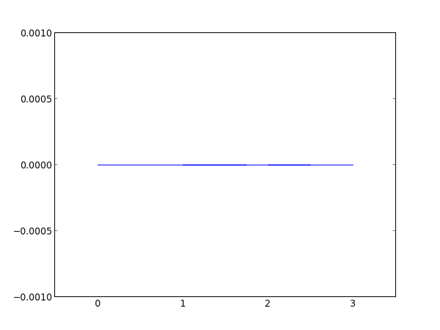

HAllA: Hierarchical All-against-All association testing¶
Version 0.0.1¶
- Authors
- Yo Sup Moon, Curtis Huttenhower
- Google Group
- halla-users: https://groups.google.com/forum/#!forum/halla-users
- License
- MIT License
- URL
- http://huttenhower.sph.harvard.edu/halla
- Citation
- Yo Sup Moon, Curtis Huttenhower, “Retrieving Signal from Noise in Big Data: An Information-Theoretic Approach to Hierarchical Exploratory Data Analysis” (In Preparation)
Chapter 0 Getting Started¶
Operating System¶
- Supported
- Ubuntu Linux (>= 12.04)
- Mac OS X (>= 10.7)
- Unsupported
- Windows (>= XP)
Dependencies¶
- Required
- Python (>= 2.7)
- Numpy (>= 1.7.1)
- Scipy (>= 0.12)
- Scikit-learn (>=0.13)
- rpy (>=2.0)
- sampledoc-master
- Recommended Tools for documentation
- Docutils
- itex2MML
Getting HAllA¶
HAllA can be downloaded from its bitbucket repository: http://bitbucket.org/chuttenh/halla.
Chapter 1 Basics¶
Introduction¶
HAllA: is a programmatic tool for performing multiple association testing between two or more heterogeneous datasets, each containing a mixture of discrete, binary, or continuous data. HAllA is a robust and efficient alternative to traditional all-against-all association testing of variables. Its robustness relies on the usage of mutual information-based measures to calculate the degree to which two variables are related. Mutual-information is well-suited to serve as an all-purpose measure since it is well-behaved even when comparing two variables of different data types. Its efficiency relies on a hierarchical clustering scheme to reduce the number of tests necessary to discover interesting associations in datasets that contain potentially millions of genotypic and phenotypic data. In a traditional all-against-all association-testing scheme, the number of pairwise tests scale quadratically with the number of features in the data (O(N^2)). The sheer number of association tests dramatically reduces the power of standard hypothesis tests to discover relationships among variables. We introduce a hierarchical hypothesis-testing scheme to perform tiered testing on clusters of data to reduce computational time for comparisons. Hierarchical false discovery rate correction is implemented to curb discoveries of associations due to noise in the data.
Input¶
HAlLA by default takes a tab-delimited text file as an input, where each row describes feature (data/metadata) and each column represents an instance. In other words, input X is a D x N matrix where D is the number of dimensions in each instance of the data and N is the number of instances (samples). The “edges” of the matrix should contain labels of the data, if desired. The following is an example input
+-------+---------+---------+--------+
| | Sample1 | Sample2 | Sample3|
+-------+---------+---------+--------+
| Data1 | 0 | 1 | 2 |
+-------+---------+---------+--------+
| Data2 | 1.5 | 100.2 | -30.7 |
+-------+---------+---------+--------+
Output¶
HAllA by default prints a tab-delimited text file as output
+------+------+-------+------+------+
| One | Two | MID | Pperm| Pboot|
+------+------+-------+------+------+
| Data1| Data2| 0.64 | 0.02 | 0.008|
+------+------+-------+------+------+
MID stands for “mutual information distance”, which is an information-theoretic measure of association between two random variables. Pperm and Pboot corresponds to the p-values of the permutation and bootstrap tests used to assess the statistical significance of the mutual information distance (i.e. lower p-values signify that the association between two variables is not likely to be caused by the noise in the data).
Advanced¶
The following is a list of all available arguments that can be passed into halla:
usage: halla.py [-h] [-o output.txt] [-p p_value] [-P p_mi] [-b bootstraps] [-v verbosity] [input.txt]
Hierarchical All-against-All significance association testing.
positional arguments:
input.txt Tab-delimited text input file, one row per feature, one
column per measurement
optional arguments:
-h, --help show this help message and exit
-o output.txt Optional output file for association significance tests
-p p_value P-value for overall significance tests
-P p_mi P-value for permutation equivalence of MI clusters
-b bootstraps Number of bootstraps for significance testing
-v verbosity Debug logging level; increase for greater verbosity
Mini-tutorial¶
Suppose you have a tab-delimited file containing the dataset you wish to run halla on. We will call this file in.txt. We will call the output file out.txt. In the root directory of halla, one can type:
$ python halla.py in.txt > out.txt
To obtain the output in out.txt.
Frequently Asked Questions¶
NB: Direct all questions to the halla-users google group.
Functions¶
HAllA: Hiearchical All-against All¶
- Description
- An object-oriented halla implementation Aim to be as self-contained as possible
Global namespace conventions:
- m() <- map for arrays
- r() <- reduce for arrays
- rd() <- generic reduce-dimension method
- halla.multinomial(n, pvals, size=None)¶
Draw samples from a multinomial distribution.
The multinomial distribution is a multivariate generalisation of the binomial distribution. Take an experiment with one of p possible outcomes. An example of such an experiment is throwing a dice, where the outcome can be 1 through 6. Each sample drawn from the distribution represents n such experiments. Its values, X_i = [X_0, X_1, ..., X_p], represent the number of times the outcome was i.
Parameters: n : int
Number of experiments.
pvals : sequence of floats, length p
Probabilities of each of the p different outcomes. These should sum to 1 (however, the last element is always assumed to account for the remaining probability, as long as sum(pvals[:-1]) <= 1).
size : tuple of ints
Given a size of (M, N, K), then M*N*K samples are drawn, and the output shape becomes (M, N, K, p), since each sample has shape (p,).
Examples
Throw a dice 20 times:
>>> np.random.multinomial(20, [1/6.]*6, size=1) array([[4, 1, 7, 5, 2, 1]])
It landed 4 times on 1, once on 2, etc.
Now, throw the dice 20 times, and 20 times again:
>>> np.random.multinomial(20, [1/6.]*6, size=2) array([[3, 4, 3, 3, 4, 3], [2, 4, 3, 4, 0, 7]])
For the first run, we threw 3 times 1, 4 times 2, etc. For the second, we threw 2 times 1, 4 times 2, etc.
A loaded dice is more likely to land on number 6:
>>> np.random.multinomial(100, [1/7.]*5) array([13, 16, 13, 16, 42])
- halla.normal(loc=0.0, scale=1.0, size=None)¶
Draw random samples from a normal (Gaussian) distribution.
The probability density function of the normal distribution, first derived by De Moivre and 200 years later by both Gauss and Laplace independently [R2], is often called the bell curve because of its characteristic shape (see the example below).
The normal distributions occurs often in nature. For example, it describes the commonly occurring distribution of samples influenced by a large number of tiny, random disturbances, each with its own unique distribution [R2].
Parameters: loc : float
Mean (“centre”) of the distribution.
scale : float
Standard deviation (spread or “width”) of the distribution.
size : tuple of ints
Output shape. If the given shape is, e.g., (m, n, k), then m * n * k samples are drawn.
See also
- scipy.stats.distributions.norm
- probability density function, distribution or cumulative density function, etc.
Notes
The probability density for the Gaussian distribution is

where
 is the mean and
is the mean and  the standard deviation.
The square of the standard deviation,
the standard deviation.
The square of the standard deviation,  , is called the
variance.
, is called the
variance.The function has its peak at the mean, and its “spread” increases with the standard deviation (the function reaches 0.607 times its maximum at
 and
and  [R2]). This implies that
numpy.random.normal is more likely to return samples lying close to the
mean, rather than those far away.
[R2]). This implies that
numpy.random.normal is more likely to return samples lying close to the
mean, rather than those far away.References
[R1] Wikipedia, “Normal distribution”, http://en.wikipedia.org/wiki/Normal_distribution [R2] (1, 2, 3, 4) P. R. Peebles Jr., “Central Limit Theorem” in “Probability, Random Variables and Random Signal Principles”, 4th ed., 2001, pp. 51, 51, 125. Examples
Draw samples from the distribution:
>>> mu, sigma = 0, 0.1 # mean and standard deviation >>> s = np.random.normal(mu, sigma, 1000)
Verify the mean and the variance:
>>> abs(mu - np.mean(s)) < 0.01 True
>>> abs(sigma - np.std(s, ddof=1)) < 0.01 True
Display the histogram of the samples, along with the probability density function:
>>> import matplotlib.pyplot as plt >>> count, bins, ignored = plt.hist(s, 30, normed=True) >>> plt.plot(bins, 1/(sigma * np.sqrt(2 * np.pi)) * ... np.exp( - (bins - mu)**2 / (2 * sigma**2) ), ... linewidth=2, color='r') >>> plt.show()
unified statistics module
- halla.stats.bh(afPVAL, fQ=1.0)[source]¶
Implement the benjamini-hochberg hierarchical hypothesis testing criterion In practice, used for implementing Yekutieli criterion per layer.
When BH is performed per layer, FDR is approximately

where
 is the observed number of discoveries and
is the observed number of discoveries and  is the observed number of families tested.
is the observed number of families tested.Universal bound: the full tree FDR is

- afPVAL
- list of p-values
- abOUT
- boolean vector corresponding to which hypothesis test rejected, corresponding to p-value
- halla.stats.binomial(n, p, size=None)¶
Draw samples from a binomial distribution.
Samples are drawn from a Binomial distribution with specified parameters, n trials and p probability of success where n an integer > 0 and p is in the interval [0,1]. (n may be input as a float, but it is truncated to an integer in use)
Parameters: n : float (but truncated to an integer)
parameter, > 0.
p : float
parameter, >= 0 and <=1.
size : {tuple, int}
Output shape. If the given shape is, e.g., (m, n, k), then m * n * k samples are drawn.
Returns: samples : {ndarray, scalar}
where the values are all integers in [0, n].
See also
- scipy.stats.distributions.binom
- probability density function, distribution or cumulative density function, etc.
Notes
The probability density for the Binomial distribution is

where
 is the number of trials,
is the number of trials,  is the probability
of success, and
is the probability
of success, and  is the number of successes.
is the number of successes.When estimating the standard error of a proportion in a population by using a random sample, the normal distribution works well unless the product p*n <=5, where p = population proportion estimate, and n = number of samples, in which case the binomial distribution is used instead. For example, a sample of 15 people shows 4 who are left handed, and 11 who are right handed. Then p = 4/15 = 27%. 0.27*15 = 4, so the binomial distribution should be used in this case.
References
[R3] Dalgaard, Peter, “Introductory Statistics with R”, Springer-Verlag, 2002. [R4] Glantz, Stanton A. “Primer of Biostatistics.”, McGraw-Hill, Fifth Edition, 2002. [R5] Lentner, Marvin, “Elementary Applied Statistics”, Bogden and Quigley, 1972. [R6] Weisstein, Eric W. “Binomial Distribution.” From MathWorld–A Wolfram Web Resource. http://mathworld.wolfram.com/BinomialDistribution.html [R7] Wikipedia, “Binomial-distribution”, http://en.wikipedia.org/wiki/Binomial_distribution Examples
Draw samples from the distribution:
>>> n, p = 10, .5 # number of trials, probability of each trial >>> s = np.random.binomial(n, p, 1000) # result of flipping a coin 10 times, tested 1000 times.
A real world example. A company drills 9 wild-cat oil exploration wells, each with an estimated probability of success of 0.1. All nine wells fail. What is the probability of that happening?
Let’s do 20,000 trials of the model, and count the number that generate zero positive results.
>>> sum(np.random.binomial(9,0.1,20000)==0)/20000. answer = 0.38885, or 38%.
- halla.stats.cumulative_log_cut(cake_length, iBase=2)[source]¶
Input: cake_length <- length of array, iBase <- base of logarithm
Output: array of indices corresponding to the slice
Note: Probably don’t want size-1 cake slices, but for proof-of-concept, this should be okay. Avoid the “all” case
- halla.stats.discretize(pArray, iN=None, method=None, aiSkip=[])[source]¶
>>> discretize( [0.1, 0.2, 0.3, 0.4] ) [0, 0, 1, 1]
>>> discretize( [0.01, 0.04, 0.09, 0.16] ) [0, 0, 1, 1]
>>> discretize( [-0.1, -0.2, -0.3, -0.4] ) [1, 1, 0, 0]
>>> discretize( [0.25, 0.5, 0.75, 1.00] ) [0, 0, 1, 1]
>>> discretize( [0.015625, 0.125, 0.421875, 1] ) [0, 0, 1, 1]
>>> discretize( [0] ) [0]
>>> discretize( [0, 1] ) [0, 0]
>>> discretize( [0, 1], 2 ) [0, 1]
>>> discretize( [1, 0], 2 ) [1, 0]
>>> discretize( [0.2, 0.1, 0.3], 3 ) [1, 0, 2]
>>> discretize( [0.2, 0.1, 0.3], 1 ) [0, 0, 0]
>>> discretize( [0.2, 0.1, 0.3], 2 ) [0, 0, 1]
>>> discretize( [0.4, 0.2, 0.1, 0.3], 2 ) [1, 0, 0, 1]
>>> discretize( [4, 0.2, 0.1, 0.3], 2 ) [1, 0, 0, 1]
>>> discretize( [0.4, 0.2, 0.1, 0.3, 0.5] ) [1, 0, 0, 0, 1]
>>> discretize( [0.4, 0.2, 0.1, 0.3, 0.5], 3 ) [1, 0, 0, 1, 2]
>>> discretize( [0.4, 0.2, 0.6, 0.1, 0.3, 0.5] ) [1, 0, 1, 0, 0, 1]
>>> discretize( [0.4, 0.2, 0.6, 0.1, 0.3, 0.5], 3 ) [1, 0, 2, 0, 1, 2]
>>> discretize( [0.4, 0.2, 0.6, 0.1, 0.3, 0.5], 0 ) [3, 1, 5, 0, 2, 4]
>>> discretize( [0.4, 0.2, 0.6, 0.1, 0.3, 0.5], 6 ) [3, 1, 5, 0, 2, 4]
>>> discretize( [0.4, 0.2, 0.6, 0.1, 0.3, 0.5], 60 ) [3, 1, 5, 0, 2, 4]
>>> discretize( [0, 0, 0, 0, 0, 0, 1, 2], 2 ) [0, 0, 0, 0, 0, 0, 1, 1]
>>> discretize( [0, 0, 0, 0, 1, 2, 2, 2, 2, 3], 3 ) [0, 0, 0, 0, 1, 1, 1, 1, 1, 2]
>>> discretize( [0.1, 0, 0, 0, 0, 0, 0, 0, 0] ) [1, 0, 0, 0, 0, 0, 0, 0, 0]
>>> discretize( [0.992299, 1, 1, 0.999696, 0.999605, 0.663081, 0.978293, 0.987621, 0.997237, 0.999915, 0.984792, 0.998338, 0.999207, 0.98051, 0.997984, 0.999219, 0.579824, 0.998983, 0.720498, 1, 0.803619, 0.970992, 1, 0.952881, 0.999866, 0.997153, 0.014053, 0.998049, 0.977727, 0.971233, 0.995309, 0.0010376, 1, 0.989373, 0.989161, 0.91637, 1, 0.99977, 0.960816, 0.998025, 1, 0.998852, 0.960849, 0.957963, 0.998733, 0.999426, 0.876182, 0.998509, 0.988527, 0.998265, 0.943673] ) [3, 6, 6, 5, 5, 0, 2, 2, 3, 5, 2, 4, 4, 2, 3, 5, 0, 4, 0, 6, 0, 1, 6, 1, 5, 3, 0, 3, 2, 1, 3, 0, 6, 3, 2, 0, 6, 5, 1, 3, 6, 4, 1, 1, 4, 5, 0, 4, 2, 4, 1]
>>> x = array([[0.1,0.2,0.3,0.4],[1,1,1,0],[0.01,0.04,0.09,0.16],[0,0,0,1]]) >>> y = array([[-0.1,-0.2,-0.3,-0.4],[1,1,0,0],[0.25,0.5,0.75,1.0],[0.015625,0.125,0.421875,1.0]]) >>> dx = discretize( x, iN = None, method = None, aiSkip = [1,3] ) >>> dx array([[ 0., 0., 1., 1.], [ 1., 1., 1., 0.], [ 0., 0., 1., 1.], [ 0., 0., 0., 1.]]) >>> dy = discretize( y, iN = None, method = None, aiSkip = [1] ) >>> dy array([[ 1., 1., 0., 0.], [ 1., 1., 0., 0.], [ 0., 0., 1., 1.], [ 0., 0., 1., 1.]])
- halla.stats.get_medoid(pArray, iAxis=0, pMetric=<function l2 at 0x5de2f50>)[source]¶
Input: numpy array Output: float
For lack of better way, compute centroid, then compute medoid by looking at an element that is closest to the centroid.
Can define arbitrary metric passed in as a function to pMetric
- halla.stats.log_cut(cake_length, iBase=2)[source]¶
Input: cake_length <- length of array, iBase <- base of logarithm
Output: array of indices corresponding to the slice
Note: Probably don’t want size-1 cake slices, but for proof-of-concept, this should be okay. Avoid the “all” case
- halla.stats.mca(pArray, iComponents=1)[source]¶
Input: D x N STRING DISCRETIZED matrix #Caution! must pass in strings Output: D x N FLOAT matrix
- halla.stats.multinomial(n, pvals, size=None)¶
Draw samples from a multinomial distribution.
The multinomial distribution is a multivariate generalisation of the binomial distribution. Take an experiment with one of p possible outcomes. An example of such an experiment is throwing a dice, where the outcome can be 1 through 6. Each sample drawn from the distribution represents n such experiments. Its values, X_i = [X_0, X_1, ..., X_p], represent the number of times the outcome was i.
Parameters: n : int
Number of experiments.
pvals : sequence of floats, length p
Probabilities of each of the p different outcomes. These should sum to 1 (however, the last element is always assumed to account for the remaining probability, as long as sum(pvals[:-1]) <= 1).
size : tuple of ints
Given a size of (M, N, K), then M*N*K samples are drawn, and the output shape becomes (M, N, K, p), since each sample has shape (p,).
Examples
Throw a dice 20 times:
>>> np.random.multinomial(20, [1/6.]*6, size=1) array([[4, 1, 7, 5, 2, 1]])
It landed 4 times on 1, once on 2, etc.
Now, throw the dice 20 times, and 20 times again:
>>> np.random.multinomial(20, [1/6.]*6, size=2) array([[3, 4, 3, 3, 4, 3], [2, 4, 3, 4, 0, 7]])
For the first run, we threw 3 times 1, 4 times 2, etc. For the second, we threw 2 times 1, 4 times 2, etc.
A loaded dice is more likely to land on number 6:
>>> np.random.multinomial(100, [1/7.]*5) array([13, 16, 13, 16, 42])
- halla.stats.normal(loc=0.0, scale=1.0, size=None)¶
Draw random samples from a normal (Gaussian) distribution.
The probability density function of the normal distribution, first derived by De Moivre and 200 years later by both Gauss and Laplace independently [R9], is often called the bell curve because of its characteristic shape (see the example below).
The normal distributions occurs often in nature. For example, it describes the commonly occurring distribution of samples influenced by a large number of tiny, random disturbances, each with its own unique distribution [R9].
Parameters: loc : float
Mean (“centre”) of the distribution.
scale : float
Standard deviation (spread or “width”) of the distribution.
size : tuple of ints
Output shape. If the given shape is, e.g., (m, n, k), then m * n * k samples are drawn.
See also
- scipy.stats.distributions.norm
- probability density function, distribution or cumulative density function, etc.
Notes
The probability density for the Gaussian distribution is
where
is the mean and the standard deviation.
The square of the standard deviation, , is called the
variance.The function has its peak at the mean, and its “spread” increases with the standard deviation (the function reaches 0.607 times its maximum at
and [R9]). This implies that
numpy.random.normal is more likely to return samples lying close to the
mean, rather than those far away.References
[R8] Wikipedia, “Normal distribution”, http://en.wikipedia.org/wiki/Normal_distribution [R9] (1, 2, 3, 4) P. R. Peebles Jr., “Central Limit Theorem” in “Probability, Random Variables and Random Signal Principles”, 4th ed., 2001, pp. 51, 51, 125. Examples
Draw samples from the distribution:
>>> mu, sigma = 0, 0.1 # mean and standard deviation >>> s = np.random.normal(mu, sigma, 1000)
Verify the mean and the variance:
>>> abs(mu - np.mean(s)) < 0.01 True
>>> abs(sigma - np.std(s, ddof=1)) < 0.01 True
Display the histogram of the samples, along with the probability density function:
>>> import matplotlib.pyplot as plt >>> count, bins, ignored = plt.hist(s, 30, normed=True) >>> plt.plot(bins, 1/(sigma * np.sqrt(2 * np.pi)) * ... np.exp( - (bins - mu)**2 / (2 * sigma**2) ), ... linewidth=2, color='r') >>> plt.show()
- halla.stats.p_val_plot(pArray1, pArray2, pCut=<function log_cut at 0x5de5848>, iIter=100)[source]¶
Returns p value plot of combinatorial cuts
In practice, works best when arrays are of similar size, since I implement the minimum ... For future think about implementing the correct step function
- halla.stats.permutation_test_by_representative(pArray1, pArray2, metric='mi', decomposition='pca', iIter=100)[source]¶
Input: pArray1, pArray2, metric = “mi”, decomposition = “pca”, iIter = 100
metric = {“mca”: mca, “pca”: pca}
- halla.stats.shuffle(x)¶
Modify a sequence in-place by shuffling its contents.
Parameters: x : array_like
The array or list to be shuffled.
Returns: None :
Examples
>>> arr = np.arange(10) >>> np.random.shuffle(arr) >>> arr [1 7 5 2 9 4 3 6 0 8]
This function only shuffles the array along the first index of a multi-dimensional array:
>>> arr = np.arange(9).reshape((3, 3)) >>> np.random.shuffle(arr) >>> arr array([[3, 4, 5], [6, 7, 8], [0, 1, 2]])
Abstract distance module providing different notions of distance
- class halla.distance.AdjustedMutualInformation(c_array1, c_array2)[source]¶
adjusted for chance
Methods
- class halla.distance.Distance(c_array1, c_array2)[source]¶
abstract distance, handles numpy arrays (probably should support lists for compatibility issues)
Methods
- class halla.distance.MutualInformation(c_array1, c_array2, bSym=False)[source]¶
Scikit-learn uses the convention log = ln Adjust multiplicative factor of log(e,2)
Methods
- class halla.distance.NormalizedMutualInformation(c_array1, c_array2)[source]¶
normalized by sqrt(H1*H2) so the range is [0,1]
Methods
- halla.distance.adj_mi(pData1, pData2)[source]¶
Static implementation of adjusted distance
Examples
>>> x = array([[0.1,0.2,0.3,0.4],[1,1,1,0],[0.01,0.04,0.09,0.16],[0,0,0,1]]) >>> y = array([[-0.1,-0.2,-0.3,-0.4],[1,1,0,0],[0.25,0.5,0.75,1.0],[0.015625,0.125,0.421875,1.0]]) >>> dx = halla.stats.discretize( x, iN = None, method = None, aiSkip = [1,3] ) >>> dy = halla.stats.discretize( y, iN = None, method = None, aiSkip = [1] ) >>> p = itertools.product( range(len(x)), range(len(y)) ) >>> for item in p: i,j = item; print (i,j), adj_mi( dx[i], dy[j] ) (0, 0) 1.0 (0, 1) 1.0 (0, 2) 1.0 (0, 3) 1.0 (1, 0) 2.51758394487e-08 (1, 1) 2.51758394487e-08 (1, 2) 2.51758394487e-08 (1, 3) 2.51758394487e-08 (2, 0) 1.0 (2, 1) 1.0 (2, 2) 1.0 (2, 3) 1.0 (3, 0) -3.72523550982e-08 (3, 1) -3.72523550982e-08 (3, 2) -3.72523550982e-08 (3, 3) -3.72523550982e-08
- halla.distance.adj_mid(pData1, pData2)[source]¶
Static implementation of adjusted distance
Examples
>>> x = array([[0.1,0.2,0.3,0.4],[1,1,1,0],[0.01,0.04,0.09,0.16],[0,0,0,1]]) >>> y = array([[-0.1,-0.2,-0.3,-0.4],[1,1,0,0],[0.25,0.5,0.75,1.0],[0.015625,0.125,0.421875,1.0]]) >>> dx = halla.stats.discretize( x, iN = None, method = None, aiSkip = [1,3] ) >>> dy = halla.stats.discretize( y, iN = None, method = None, aiSkip = [1] ) >>> p = itertools.product( range(len(x)), range(len(y)) ) >>> for item in p: i,j = item; print (i,j), adj_mid( dx[i], dy[j] ) (0, 0) 0.0 (0, 1) 0.0 (0, 2) 0.0 (0, 3) 0.0 (1, 0) 0.999999974824 (1, 1) 0.999999974824 (1, 2) 0.999999974824 (1, 3) 0.999999974824 (2, 0) 0.0 (2, 1) 0.0 (2, 2) 0.0 (2, 3) 0.0 (3, 0) 1.00000003725 (3, 1) 1.00000003725 (3, 2) 1.00000003725 (3, 3) 1.00000003725
- halla.distance.cor(pData1, pData2, method='pearson', pval=False)[source]¶
Get correlation coefficient and corresponding parametric p-value (t-test)
Parameters: pData1, pData2 : numpy arrays
data matrices
method : str
{“pearson”, “spearman”} “abs”
pval : bool
True if parametric estimate of p-value requested
Returns: rho: float :
correlation coefficient
p: float :
p-value
Examples
View pairwise correlation measures (pearson,spearman) between two datasets x and y:
>>> x = array([[0.1,0.2,0.3,0.4],[1,1,1,0],[0.01,0.04,0.09,0.16],[0,0,0,1]]) >>> y = array([[-0.1,-0.2,-0.3,-0.4],[1,1,0,0],[0.25,0.5,0.75,1.0],[0.015625,0.125,0.421875,1.0]]) >>> p = [_ for _ in itertools.product( range(len(x)), range(len(y)) )] >>> for item in p: i,j = item; print (i,j),cor(x[i],y[j], method="pearson"),cor(x[i],y[j], method="spearman") (0, 0) -1.0 -1.0 (0, 1) -0.894427191 -0.894427191 (0, 2) 1.0 1.0 (0, 3) 0.951369855792 1.0 (1, 0) 0.774596669241 0.774596669241 (1, 1) 0.57735026919 0.57735026919 (1, 2) -0.774596669241 -0.774596669241 (1, 3) -0.921159901892 -0.774596669241 (2, 0) -0.984374038698 -1.0 (2, 1) -0.880450906326 -0.894427191 (2, 2) 0.984374038698 1.0 (2, 3) 0.99053285189 1.0 (3, 0) -0.774596669241 -0.774596669241 (3, 1) -0.57735026919 -0.57735026919 (3, 2) 0.774596669241 0.774596669241 (3, 3) 0.921159901892 0.774596669241
Generate p-values for pearson correlation:
>>> pval_pearson = sorted( [cor(x[i],y[j], method="pearson", pval=True)[1] for i,j in p] ) >>> pval_pearson [0.0, 0.0, 0.0094671481098304033, 0.01562596130230276, 0.015625961302302867, 0.048630144207595816, 0.07884009810806647, 0.07884009810806647, 0.10557280900008403, 0.11954909367437615, 0.22540333075851643, 0.22540333075851643, 0.2254033307585166, 0.2254033307585166, 0.42264973081037405, 0.42264973081037405]
View plot:
plt.plot( pval_pearson ) plt.show()
(Source code, png, hires.png, pdf)
Generate p-values for spearman correlation:
>>> pval_spearman = sorted( [cor(x[i],y[j], method="spearman", pval=True)[1] for i,j in p] ) >>> pval_spearman [0.0, 0.0, 0.0, 0.0, 0.0, 0.0, 0.10557280900008413, 0.10557280900008413, 0.22540333075851657, 0.22540333075851657, 0.22540333075851657, 0.22540333075851657, 0.22540333075851657, 0.22540333075851657, 0.42264973081037427, 0.42264973081037427]
View plot:
plt.plot(pval_pearson) plt.show()
(Source code, png, hires.png, pdf)

{kind=link}
{kind=link}
{kind=link}
{kind=link}
- halla.distance.cord(pData, pData2, method='pearson', inversion_method='abs', pval=False)[source]¶
Get correlation divergence
Parameters: pData1, pData2 : numpy arrays
data matrices
method : str
{“pearson”, “spearman”}
inversion_method : str
“abs”
pval : bool
True if parametric estimate of p-value requested
Returns: rho: float :
correlation coefficient
p: float :
p-value
Examples
>>> x = [0.1,0.2,0.3,0.4] >>> y = [-0.1,-0.2,-0.3,-0.4] >>> cord( x,y ) 0.0
- halla.distance.l2(pData1, pData2)[source]¶
Returns the l2 distance
>>> x = numpy.array([1,2,3]); y = numpy.array([4,5,6]) >>> l2(x,y) 5.196152422706632
- halla.distance.mi(pData1, pData2)[source]¶
Static implementation of mutual information, returns bits
Parameters: pData1, pData2 : Numpy arrays Returns: mi : float Examples
>>> x = array([[0.1,0.2,0.3,0.4],[1,1,1,0],[0.01,0.04,0.09,0.16],[0,0,0,1]]) >>> y = array([[-0.1,-0.2,-0.3,-0.4],[1,1,0,0],[0.25,0.5,0.75,1.0],[0.015625,0.125,0.421875,1.0]]) >>> dx = halla.stats.discretize( x, iN = None, method = None, aiSkip = [1,3] ) >>> dy = halla.stats.discretize( y, iN = None, method = None, aiSkip = [1] ) >>> p = itertools.product( range(len(x)), range(len(y)) ) >>> for item in p: i,j = item; print (i,j), mi( dx[i], dy[j] ) (0, 0) 1.0 (0, 1) 1.0 (0, 2) 1.0 (0, 3) 1.0 (1, 0) 0.311278124459 (1, 1) 0.311278124459 (1, 2) 0.311278124459 (1, 3) 0.311278124459 (2, 0) 1.0 (2, 1) 1.0 (2, 2) 1.0 (2, 3) 1.0 (3, 0) 0.311278124459 (3, 1) 0.311278124459 (3, 2) 0.311278124459 (3, 3) 0.311278124459
- halla.distance.mid(pData1, pData2)[source]¶
Static implementation of mutual information,
Examples
>>> x = array([[0.1,0.2,0.3,0.4],[1,1,1,0],[0.01,0.04,0.09,0.16],[0,0,0,1]]) >>> y = array([[-0.1,-0.2,-0.3,-0.4],[1,1,0,0],[0.25,0.5,0.75,1.0],[0.015625,0.125,0.421875,1.0]]) >>> dx = halla.stats.discretize( x, iN = None, method = None, aiSkip = [1,3] ) >>> dy = halla.stats.discretize( y, iN = None, method = None, aiSkip = [1] ) >>> p = itertools.product( range(len(x)), range(len(y)) ) >>> for item in p: i,j = item; print (i,j), mid( dx[i], dy[j] ) (0, 0) 0.0 (0, 1) 0.0 (0, 2) 0.0 (0, 3) 0.0 (1, 0) 0.688721875541 (1, 1) 0.688721875541 (1, 2) 0.688721875541 (1, 3) 0.688721875541 (2, 0) 0.0 (2, 1) 0.0 (2, 2) 0.0 (2, 3) 0.0 (3, 0) 0.688721875541 (3, 1) 0.688721875541 (3, 2) 0.688721875541 (3, 3) 0.688721875541
- halla.distance.norm_mi(pData1, pData2)[source]¶
Static implementation of normalized mutual information
Examples
>>> x = array([[0.1,0.2,0.3,0.4],[1,1,1,0],[0.01,0.04,0.09,0.16],[0,0,0,1]]) >>> y = array([[-0.1,-0.2,-0.3,-0.4],[1,1,0,0],[0.25,0.5,0.75,1.0],[0.015625,0.125,0.421875,1.0]]) >>> dx = halla.stats.discretize( x, iN = None, method = None, aiSkip = [1,3] ) >>> dy = halla.stats.discretize( y, iN = None, method = None, aiSkip = [1] ) >>> p = itertools.product( range(len(x)), range(len(y)) ) >>> for item in p: i,j = item; print (i,j), norm_mi( dx[i], dy[j] ) (0, 0) 1.0 (0, 1) 1.0 (0, 2) 1.0 (0, 3) 1.0 (1, 0) 0.345592029944 (1, 1) 0.345592029944 (1, 2) 0.345592029944 (1, 3) 0.345592029944 (2, 0) 1.0 (2, 1) 1.0 (2, 2) 1.0 (2, 3) 1.0 (3, 0) 0.345592029944 (3, 1) 0.345592029944 (3, 2) 0.345592029944 (3, 3) 0.345592029944
- halla.distance.norm_mid(pData1, pData2)[source]¶
Static implementation of normalized mutual information
Examples
>>> x = array([[0.1,0.2,0.3,0.4],[1,1,1,0],[0.01,0.04,0.09,0.16],[0,0,0,1]]) >>> y = array([[-0.1,-0.2,-0.3,-0.4],[1,1,0,0],[0.25,0.5,0.75,1.0],[0.015625,0.125,0.421875,1.0]]) >>> dx = halla.stats.discretize( x, iN = None, method = None, aiSkip = [1,3] ) >>> dy = halla.stats.discretize( y, iN = None, method = None, aiSkip = [1] ) >>> p = itertools.product( range(len(x)), range(len(y)) ) >>> for item in p: i,j = item; print (i,j), norm_mid( dx[i], dy[j] ) (0, 0) 0.0 (0, 1) 0.0 (0, 2) 0.0 (0, 3) 0.0 (1, 0) 0.654407970056 (1, 1) 0.654407970056 (1, 2) 0.654407970056 (1, 3) 0.654407970056 (2, 0) 0.0 (2, 1) 0.0 (2, 2) 0.0 (2, 3) 0.0 (3, 0) 0.654407970056 (3, 1) 0.654407970056 (3, 2) 0.654407970056 (3, 3) 0.654407970056
- halla.distance.pdist(pArray, metric='euclidean')[source]¶
Performs pairwise distance computation
Parameters: pArray : numpy array
metric : str
Returns: D : redundancy-checked distance matrix (flat)
Examples
>>> x = array([[0.1,0.2,0.3,0.4],[1,1,1,0],[0.01,0.04,0.09,0.16],[0,0,0,1]]) >>> y = array([[-0.1,-0.2,-0.3,-0.4],[1,1,0,0],[0.25,0.5,0.75,1.0],[0.015625,0.125,0.421875,1.0]]) >>> dx = halla.stats.discretize( x, iN = None, method = None, aiSkip = [1,3] ) >>> dy = halla.stats.discretize( y, iN = None, method = None, aiSkip = [1] ) >>> halla.distance.pdist( x, halla.distance.cord ) array([ 0.22540333, 0.01562596, 0.22540333, 0.13584143, 0. , 0.13584143]) >>> halla.distance.pdist( y, halla.distance.cord ) array([ 0.10557281, 0. , 0.04863014, 0.10557281, 0.16134198, 0.04863014]) >>> halla.distance.pdist( x, lambda u,v: halla.distance.cord(u,v, method="spearman") ) array([ 0.22540333, 0. , 0.22540333, 0.22540333, 0. , 0.22540333]) >>> halla.distance.pdist( y, lambda u,v: halla.distance.cord(u,v, method="spearman") ) array([ 0.10557281, 0. , 0. , 0.10557281, 0.10557281, 0. ]) >>> halla.distance.pdist( dx, halla.distance.norm_mid ) array([ 0.65440797, 0. , 0.65440797, 0.65440797, 0. , 0.65440797]) >>> halla.distance.pdist( dy, halla.distance.norm_mid ) array([ 0., 0., 0., 0., 0., 0.])
- halla.distance.squareform(pArray)[source]¶
Switches back and forth between square and flat distance matrices
Parses input/output formats, manages transformations
- class halla.parser.Input(strFileName1, strFileName2=None, var_names=True, headers=False)[source]¶
Methods
Wrappers for testing procedures, random data generation, etc
- halla.test.multinomial(n, pvals, size=None)¶
Draw samples from a multinomial distribution.
The multinomial distribution is a multivariate generalisation of the binomial distribution. Take an experiment with one of p possible outcomes. An example of such an experiment is throwing a dice, where the outcome can be 1 through 6. Each sample drawn from the distribution represents n such experiments. Its values, X_i = [X_0, X_1, ..., X_p], represent the number of times the outcome was i.
Parameters: n : int
Number of experiments.
pvals : sequence of floats, length p
Probabilities of each of the p different outcomes. These should sum to 1 (however, the last element is always assumed to account for the remaining probability, as long as sum(pvals[:-1]) <= 1).
size : tuple of ints
Given a size of (M, N, K), then M*N*K samples are drawn, and the output shape becomes (M, N, K, p), since each sample has shape (p,).
Examples
Throw a dice 20 times:
>>> np.random.multinomial(20, [1/6.]*6, size=1) array([[4, 1, 7, 5, 2, 1]])
It landed 4 times on 1, once on 2, etc.
Now, throw the dice 20 times, and 20 times again:
>>> np.random.multinomial(20, [1/6.]*6, size=2) array([[3, 4, 3, 3, 4, 3], [2, 4, 3, 4, 0, 7]])
For the first run, we threw 3 times 1, 4 times 2, etc. For the second, we threw 2 times 1, 4 times 2, etc.
A loaded dice is more likely to land on number 6:
>>> np.random.multinomial(100, [1/7.]*5) array([13, 16, 13, 16, 42])
- halla.test.normal(loc=0.0, scale=1.0, size=None)¶
Draw random samples from a normal (Gaussian) distribution.
The probability density function of the normal distribution, first derived by De Moivre and 200 years later by both Gauss and Laplace independently [R11], is often called the bell curve because of its characteristic shape (see the example below).
The normal distributions occurs often in nature. For example, it describes the commonly occurring distribution of samples influenced by a large number of tiny, random disturbances, each with its own unique distribution [R11].
Parameters: loc : float
Mean (“centre”) of the distribution.
scale : float
Standard deviation (spread or “width”) of the distribution.
size : tuple of ints
Output shape. If the given shape is, e.g., (m, n, k), then m * n * k samples are drawn.
See also
- scipy.stats.distributions.norm
- probability density function, distribution or cumulative density function, etc.
Notes
The probability density for the Gaussian distribution is
where
is the mean and the standard deviation.
The square of the standard deviation, , is called the
variance.The function has its peak at the mean, and its “spread” increases with the standard deviation (the function reaches 0.607 times its maximum at
and [R11]). This implies that
numpy.random.normal is more likely to return samples lying close to the
mean, rather than those far away.References
[R10] Wikipedia, “Normal distribution”, http://en.wikipedia.org/wiki/Normal_distribution [R11] (1, 2, 3, 4) P. R. Peebles Jr., “Central Limit Theorem” in “Probability, Random Variables and Random Signal Principles”, 4th ed., 2001, pp. 51, 51, 125. Examples
Draw samples from the distribution:
>>> mu, sigma = 0, 0.1 # mean and standard deviation >>> s = np.random.normal(mu, sigma, 1000)
Verify the mean and the variance:
>>> abs(mu - np.mean(s)) < 0.01 True
>>> abs(sigma - np.std(s, ddof=1)) < 0.01 True
Display the histogram of the samples, along with the probability density function:
>>> import matplotlib.pyplot as plt >>> count, bins, ignored = plt.hist(s, 30, normed=True) >>> plt.plot(bins, 1/(sigma * np.sqrt(2 * np.pi)) * ... np.exp( - (bins - mu)**2 / (2 * sigma**2) ), ... linewidth=2, color='r') >>> plt.show()
- halla.test.randmat(tShape=(10, 10), pDist=<built-in method normal of mtrand.RandomState object at 0x22e6b10>)[source]¶
Returns a tShape-dimensional matrix given by base distribution pDist Order: Row, Col
- halla.test.randmix(N, pDist, atParam, tPi)[source]¶
Returns N copies drawn from a mixture distribution $H$ Input: N <- number of components
pDist <- pointer to base distribution H atParam <- length $k$ parameters to distribution pDist, $ heta$ tPi <- length $k$ tuple (vector) to categorical rv Z_nOutput: N copies from mixture distribution $sum_{k=1}^{K} pi_k H(.| heta )$
- halla.test.uniformly_spaced_gaussian(N, K=4, fD=2.0, tPi=(0.25, 0.25, 0.25, 0.25))[source]¶
Generate uniformly spaced Gaussian, with spacing fD in the mean. Constant 1.0 variance
Hiearchy module, used to build trees and other data structures. Handles clustering and other organization schemes.
- class halla.hierarchy.Gardener[source]¶
A gardener object is a handler for the different types of hierarchical data structures (“trees”) Can collapse and manipulate data structures and wrap them in different objects, depending on the context.
Methods
- class halla.hierarchy.Tree[source]¶
A hierarchically nested structure containing nodes as a basic core unit
Methods
- halla.hierarchy.all_against_all(apClusterNode1, apClusterNode2, pArray1, pArray2)[source]¶
Perform all-against-all per layer
Input: apClusterNode1, apClusterNode2, pArray1, pArray2
Output: a list of ( (i,j), (aiIndex1, aiIndex2, pVal) )
- halla.hierarchy.couple_tree(pClusterNode1, pClusterNode2, method='unif')[source]¶
Couples two data trees to produce a hypothesis tree
Parameters:
Returns:
Examples:
- halla.hierarchy.get_layer(atData, iLayer)[source]¶
Get output from reduce_tree_by_layer and parse
Input: atData = a list of (iLevel, list_of_nodes_at_iLevel), iLayer = zero-indexed layer number
- halla.hierarchy.hclust(pArray, pdist_metric=<function norm_mid at 0x5de52a8>, cluster_method='single', bTree=False)[source]¶
Performs hierarchical clustering on an numpy array
Parameters: pArray : numpy array
pdist_metric : str cluster_method : str bTree : boolean
Returns: Z : numpy array or ClusterNode object
Notes
This hclust function is not quite right for the MI case. Need a generic MI function that can take in clusters of RV’s, not just single ones Use the “grouping property” as discussed by Kraskov paper.
Examples
Pearson correlation 1:
from numpy import array from scipy.cluster.hierarchy import dendrogram, linkage import scipy.cluster.hierarchy import halla x = array([[0.1,0.2,0.3,0.4],[1,1,1,0],[0.01,0.04,0.09,0.16],[0,0,0,1]]) lxpearson = halla.hierarchy.hclust( x, pdist_metric = halla.distance.cord ) dendrogram(lxpearson)
(Source code, png, hires.png, pdf)
Pearson correlation 2:
from numpy import array from scipy.cluster.hierarchy import dendrogram, linkage import scipy.cluster.hierarchy import halla y = array([[-0.1,-0.2,-0.3,-0.4],[1,1,0,0],[0.25,0.5,0.75,1.0], [0.015625,0.125,0.421875,1.0]]) lypearson = halla.hierarchy.hclust( y, pdist_metric = halla.distance.cord ) dendrogram(lypearson)
(Source code, png, hires.png, pdf)

Spearman correlation 1:
from numpy import array from scipy.cluster.hierarchy import dendrogram, linkage import scipy.cluster.hierarchy import halla x = array([[0.1,0.2,0.3,0.4],[1,1,1,0],[0.01,0.04,0.09,0.16],[0,0,0,1]]) lxspearman = halla.hierarchy.hclust( x, pdist_metric = lambda u,v: halla.distance.cord(u,v,method="spearman") ) dendrogram(lxspearman)
(Source code, png, hires.png, pdf)
Spearman correlation 2:
from numpy import array from scipy.cluster.hierarchy import dendrogram, linkage import scipy.cluster.hierarchy import halla y = array([[-0.1,-0.2,-0.3,-0.4],[1,1,0,0],[0.25,0.5,0.75,1.0], [0.015625,0.125,0.421875,1.0]]) lyspearman = halla.hierarchy.hclust( y, pdist_metric = lambda u,v: halla.distance.cord(u,v,method="spearman") ) dendrogram(lyspearman)
(Source code, png, hires.png, pdf)
Mutual Information 1:
from numpy import array from scipy.cluster.hierarchy import dendrogram, linkage import scipy.cluster.hierarchy import halla x = array([[0.1,0.2,0.3,0.4],[1,1,1,0],[0.01,0.04,0.09,0.16],[0,0,0,1]]) dx = halla.stats.discretize( x, iN = None, method = None, aiSkip = [1,3] ) lxmi = halla.hierarchy.hclust( dx, pdist_metric = halla.distance.norm_mid ) dendrogram(lxmi)
(Source code, png, hires.png, pdf)
Mutual Information 2:
from numpy import array from scipy.cluster.hierarchy import dendrogram import halla y = array([[-0.1,-0.2,-0.3,-0.4],[1,1,0,0],[0.25,0.5,0.75,1.0], [0.015625,0.125,0.421875,1.0]]) dy = halla.stats.discretize( y, iN = None, method = None, aiSkip = [1] ) lymi = halla.hierarchy.hclust( dy, pdist_metric = halla.distance.norm_mid ) dendrogram( lymi )
(Source code, png, hires.png, pdf)

{kind=link}
{kind=link}
{kind=link}
{kind=link}
{kind=link}
{kind=link}
{kind=link}
{kind=link}
{kind=link}
{kind=link}
{kind=link}
{kind=link}
- halla.hierarchy.normal(loc=0.0, scale=1.0, size=None)¶
Draw random samples from a normal (Gaussian) distribution.
The probability density function of the normal distribution, first derived by De Moivre and 200 years later by both Gauss and Laplace independently [R13], is often called the bell curve because of its characteristic shape (see the example below).
The normal distributions occurs often in nature. For example, it describes the commonly occurring distribution of samples influenced by a large number of tiny, random disturbances, each with its own unique distribution [R13].
Parameters: loc : float
Mean (“centre”) of the distribution.
scale : float
Standard deviation (spread or “width”) of the distribution.
size : tuple of ints
Output shape. If the given shape is, e.g., (m, n, k), then m * n * k samples are drawn.
See also
- scipy.stats.distributions.norm
- probability density function, distribution or cumulative density function, etc.
Notes
The probability density for the Gaussian distribution is
where
is the mean and the standard deviation.
The square of the standard deviation, , is called the
variance.The function has its peak at the mean, and its “spread” increases with the standard deviation (the function reaches 0.607 times its maximum at
and [R13]). This implies that
numpy.random.normal is more likely to return samples lying close to the
mean, rather than those far away.References
[R12] Wikipedia, “Normal distribution”, http://en.wikipedia.org/wiki/Normal_distribution [R13] (1, 2, 3, 4) P. R. Peebles Jr., “Central Limit Theorem” in “Probability, Random Variables and Random Signal Principles”, 4th ed., 2001, pp. 51, 51, 125. Examples
Draw samples from the distribution:
>>> mu, sigma = 0, 0.1 # mean and standard deviation >>> s = np.random.normal(mu, sigma, 1000)
Verify the mean and the variance:
>>> abs(mu - np.mean(s)) < 0.01 True
>>> abs(sigma - np.std(s, ddof=1)) < 0.01 True
Display the histogram of the samples, along with the probability density function:
>>> import matplotlib.pyplot as plt >>> count, bins, ignored = plt.hist(s, 30, normed=True) >>> plt.plot(bins, 1/(sigma * np.sqrt(2 * np.pi)) * ... np.exp( - (bins - mu)**2 / (2 * sigma**2) ), ... linewidth=2, color='r') >>> plt.show()
- halla.hierarchy.one_against_one(pClusterNode1, pClusterNode2, pArray1, pArray2)[source]¶
one_against_one hypothesis testing for a particular layer
Input: pClusterNode1, pClusterNode2, pArray1, pArray2
Output: aiIndex1, aiIndex2, pVal
- halla.hierarchy.recursive_all_against_all(apClusterNode1, apClusterNode2, pArray1, pArray2, pOut=[], pFDR=<function bh at 0x5de5cf8>)[source]¶
Performs recursive all-against-all (the default HAllA routine) with fdr correction
Input: apClusterNode1, apClusterNode2, pArray1, pArray2, pFDR
Output: a list of ( (aiIndex1, pBag1), (aiIndex2, pBag2) )
- halla.hierarchy.reduce_tree(pClusterNode, pFunction=<function <lambda> at 0x66a3c80>, aOut=[])[source]¶
Recursive
Input: pClusterNode, pFunction = lambda x: x.id, aOut = []
Output: a list of pFunction calls (node ids by default)
- halla.hierarchy.reduce_tree_by_layer(apParents, iLevel=0, iStop=None)[source]¶
Traverse one tree.
Input: apParents, iLevel = 0, iStop = None
Output: a list of (iLevel, list_of_nodes_at_iLevel)
- halla.hierarchy.traverse_by_layer(pClusterNode1, pClusterNode2, pArray1, pArray2, pFunction)[source]¶
Useful function for doing all-against-all comparison between nodes in each layer
traverse two trees at once, applying function pFunction to each layer pair
latex: $pFunction: data1 imes data2
ightarrow mathbb{R}^k, $ for $k$ the size of the cross-product set per layer
Input: pClusterNode1, pClusterNode2, pArray1, pArray2, pFunction Output: (i,j), pFunction( pArray[:,i], pArray2[:,j])
Indices and tables¶
License¶
This software is licensed under the MIT license.
Copyright (c) 2013 Yo Sup Moon, Curtis Huttenhower
Permission is hereby granted, free of charge, to any person obtaining a copy of this software and associated documentation files (the “Software”), to deal in the Software without restriction, including without limitation the rights to use, copy, modify, merge, publish, distribute, sublicense, and/or sell copies of the Software, and to permit persons to whom the Software is furnished to do so, subject to the following conditions:
The above copyright notice and this permission notice shall be included in all copies or substantial portions of the Software.
THE SOFTWARE IS PROVIDED “AS IS”, WITHOUT WARRANTY OF ANY KIND, EXPRESS OR IMPLIED, INCLUDING BUT NOT LIMITED TO THE WARRANTIES OF MERCHANTABILITY, FITNESS FOR A PARTICULAR PURPOSE AND NONINFRINGEMENT. IN NO EVENT SHALL THE AUTHORS OR COPYRIGHT HOLDERS BE LIABLE FOR ANY CLAIM, DAMAGES OR OTHER LIABILITY, WHETHER IN AN ACTION OF CONTRACT, TORT OR OTHERWISE, ARISING FROM, OUT OF OR IN CONNECTION WITH THE SOFTWARE OR THE USE OR OTHER DEALINGS IN THE SOFTWARE.